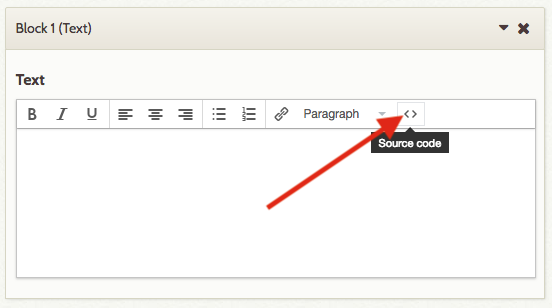
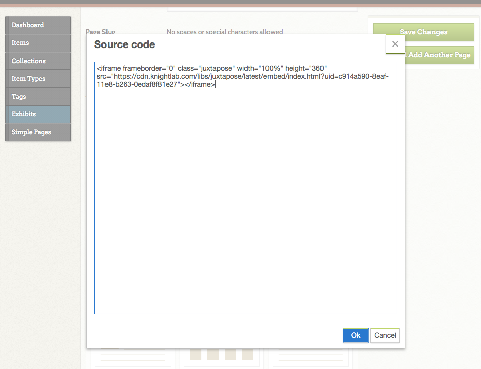

Creating comparative images is easy with Juxtapose. You can use this tool to compare images of locations or buildings taken at different times. You can then embed the juxtaposition on your Omeka Exhibit or Simple page, or on a WordPress site or other website.
- Navigate to the Juxtapose website.
- Click the “Make a Juxtapose” button at the top, which will take you to the Create a Juxtapose section.
- In the Create a Juxatpose section, add the URLs for both images. (You can use the URL to the image file for an item in your Omeka site, another source, or from a dropbox account). Be sure that the file url ends in an image file format (.jpg or .png, for example)
- Be sure to add labels to distinguish the images from one another and credit the source of your images.
- You may choose to modify the display of your juxtapose by selecting a slider position, choosing to show or hide labels and credits, animate, make responsive,or orient the slider vertically
- Click the blue Preview button to view your Juxtapose. You may find it necessary to crop or resize your photos to best display in Juxtapose.
- Once you are satisfied with the way your Juxtapose is displaying, Click Publish. Copy the code in the “Embed” section.
- In another window, navigate to your Omeka site and open the Exhibit page on which you would like your Juxtapose to appear.
- Click to add a new Text block to the page.
- In the Text Block, click the Source Code button.

- In the text field that opens, paste the Embed code you copied from the Juxtapose page (in step 6). Click Ok.

- Confirm that an image of your Juxtapose is visible in the Text block. (Note; the slider features of your Juxtapose will not work on the Admin side of your page.) Click Save Changes. To view and use your Juxtapose, click View Public Page.


Note: If you update or change the settings of your Juxtapose, you will need to copy and paste the updated Embed code (as you did in Steps 6-10) again for the changes to appear.
Note that if you are not using Omeka.net, you may need to update the HTML permissions for your Omeka site to embed visualizations. You can do so by clicking Settings and navigating to the Security tab. In the HTML Filtering section, add iframe to the list of Allowed HTML Elements. Then in the Allowed HTML Attributes section, add iframe.src,iframe.width,iframe.height to the list (pay attention to spacing and punctuation). Click to Save Changes.